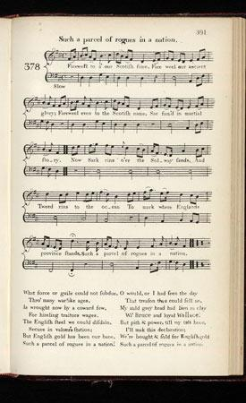
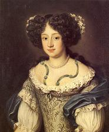
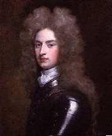

Such a Parcel of Rogues in a Nation
La nation est entre des mains immondes
Protest against the Act of Union 17th January 1707
Lyrics ascribed to Robert Burns
Tune - Mélodie"A Parcel of Rogues"
From "The Scots Musical Museum", Vol. II, Song N°378, page 391 and Hogg's "Jacobite Reliques" , vol.I, N°36
Sequenced by Christian Souchon
|
To the tune:
In spite of Andrew Kuntz's statement in his "Fiddler's Companion": "AKA (=also known as) and see "The Rashes" , "The Wee German Lairdie" , "Boyne Water" , "When the King Came O'er the Water" , "King William's March" . Scottish, Air", all these tunes differ considerably from one another and from the present melody. Source "The Fiddler's Companion" (cf. Links). |
 "Such a Parcel of Rogues in a Nation" In the "Scots Musical Museum" (The name "Burns" is not mentioned) |
A propos de la mélodie:
Malgré la remarque de M. Andrew Kuntz dans son "Fiddler's Companion": "AKA (=alias) et cf. "The Rashes" , "The Wee German Lairdie" , "Boyne Water" , "When the King Came O'er the Water" , "King William's March" . Air écossais", tous ces timbres diffèrent considérablement entre eux, ainsi que de la présente mélodie. |
Sheet music - Partition

|
1. Farewell to a' our Scottish fame
Farewell our ancient glory Farewell even to the Scottish name So famed in martial story Now Sark runs o'er the Solway sands And Tweed runs to the Ocean To mark where England's province stands [1] Such a parcel of rogues in a nation. 2. What force or guile could not subdue O'er many warlike ages Is wrought now by a coward few For hireling traitor's wages The English steel we could disdain Secure in valour's station But English gold has been our bane Such a parcel of rogues in a nation. 3. I would that ere I'd seen the day That treason thus could sell us My auld grey head had lain in clay With Bruce and faithful Wallace With pith and power 'til my last hour I make this declaration: We were bought and sold for English gold Such a parcel of rogues in a nation. From Hogg's "Jacobite Relics", vol. I, n° 36, 1819. [1] The rivers Tweed and Sark form respectively the eastern and western part of the border between Scotland and England. On the Sark the town Gretna is best known for its "wedding industry". |
1. Fameuse Ecosse, je veux te faire mes adieux!
Ainsi qu'hélas à notre antique gloire, Incluant dans ces adieux ce nom d'Ecossais que Célébrait toute une martiale Histoire. La Sark se perd désormais dans les sables du Solway, La Tweed à la mer mêle ses ondes Uniquement pour borner la province de l'Anglais. [1] La nation est entre des mains immondes! 2. Ceux que ni ruse jamais, ni force n'ont domptés Au cours de tant de siècles d'âpres guerres, Un troupeau de lâches les trahissent, comme a fait Jadis Judas, contre un honteux salaire. Nous qui fièrement bravions la flamberge du Saxon, Sûrs de notre valeur, à la ronde, Voilà que l'Anglais et son or de nous ont eu raison. La nation est entre des mains immondes! 3. Plutôt qu'être encore ici lorsque l'on nous trahit, J'aurais voulu que la mort me terrasse, Que mon chef aux cheveux gris dans le sol soit enfoui Auprès de Bruce et du loyal Wallace! Jusqu'à mon dernier soupir, je ne ferai que gémir Et hurler à la face du monde: C'est avec l'or des Anglais que nous fûmes achetés. La nation est entre des mains immondes! (Trad. Ch. Souchon (c) 2011) [1] Les rivières Tweed et Sark forment respectivement à l'est et à l'ouest la frontière entre l'Ecosse et l'Angleterre. Sur la Sark, le bourg de Gretna est connu pour les mariages qu'on y célèbre. |


Arnold Joost van Keppel's Descendants
|
In 1701 the English Parliament provided that the succession of Anne Stuart who would be King William's successor, would pass, should she leave no heir, to her nearest Protestant kinswoman,
Princess Sophia of Hanover
and her heirs.
This was an appropriate decision since the King's homosexuality was patent. When he came to England (1688), he was accompanied by General Arnold Joost van Keppel (1669-1718), a Dutch adherent who was to become his constant companion and was made Earl of Albemarle in 1696. After William's death (1702), Keppel returned to Dutch service and fought in the War of the Spanish Succession. (He is a remote ancestor of Lt Col. George Keppel, the great-grand father to the new Duchess of Cornwall, née Camilla Shand. However, there are allegations that Camilla's maternal grandmother, Sonia Keppel was a daughter of Edward VII rather than Hon. George Keppel)
This so-called ACT OF SETTLEMENT stipulated no provision for Scotland who could choose a king of her own. To prevent this danger, King William suggested a complete union of the two realms.
|
En 1701 le Parlement Anglais décida que la succession d'Anne Stuart appelée à succéder au roi Guillaume, irait, si elle n'avait pas d'héritier, à sa cousine protestante la plus prôche, la
Princesse Sophie de Hanovre
et ses héritiers.
C'était une mesure judicieuse dans la mesure où l' homosexualité du Roi était patente. Lorsqu'il arriva en Angleterre (1688), il était accompagné par le Général Arnold Joost van Keppel (1669-1718), un de ses partisans hollandais qui allait devenir son compagnon de tous les instants et qu'il fit Comte d'Albemarle en 1696. Après la mort de Guillaume (1702), Keppel retourna en Hollande où il prit part à la Guerre de Succession d'Espagne. (C'est un ancêtre éloigné du Lt Col. George Keppel, l'arrière grand-père de la nouvelle Duchesse de Cornouailles, née Camilla Shand.) On prétend toutefois que la grand-mère maternelle de Camilla, Sonia Keppel était la fille d'Edouard VII et non celle de l'Honorable George Keppel)
Cet ACTE DE DEVOLUTION ne prévoyait rien pour l'Ecosse qui aurait pu choisir son propre roi. C'est pour prévenir ce danger que le Roi Guillaume suggéra l'union complète des deux royaumes.
|
The "Corries" sing "Such a parcel of rogues"